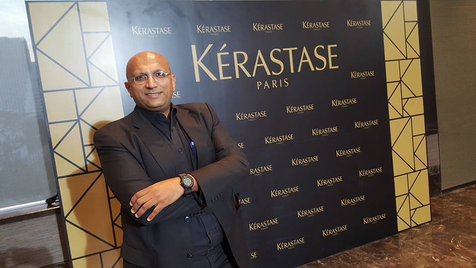
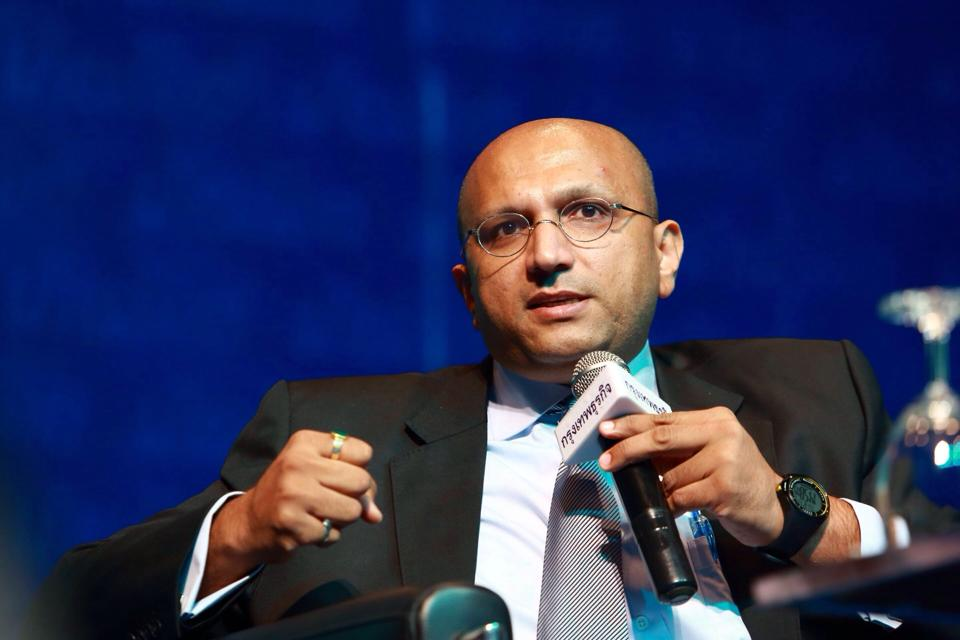

Umesh has been working in the beauty industry for almost 20 years now. Starting off as an engineer, he went on to work with procter and gamble in Thailand before becoming the CEO of L’oreal Thailand. In 2016, he was set to become the new CEO of L’oreal Indonesia, which is what he does for a living. It’s ironic that Umesh is the CEO of one of the most, if not the most successful hair care brand in Indonesia and the world, yet he's 100% bald!
Umesh has a lot of experience with running a business, as he’s been doing so for so long, and has the capability of providing aid to those who are just starting off, or are a bit stuck. That’s why, if you are in need of some professional advice, you can drop a message in the box below and Umesh will be there to help you! Whether something isn’t working out for you, or your incredibly stressed out with work, Umesh can help, as I can promise you he’s probably been in all the situations you will soon have to face as you grow as a business leader or entrepreneur.
 